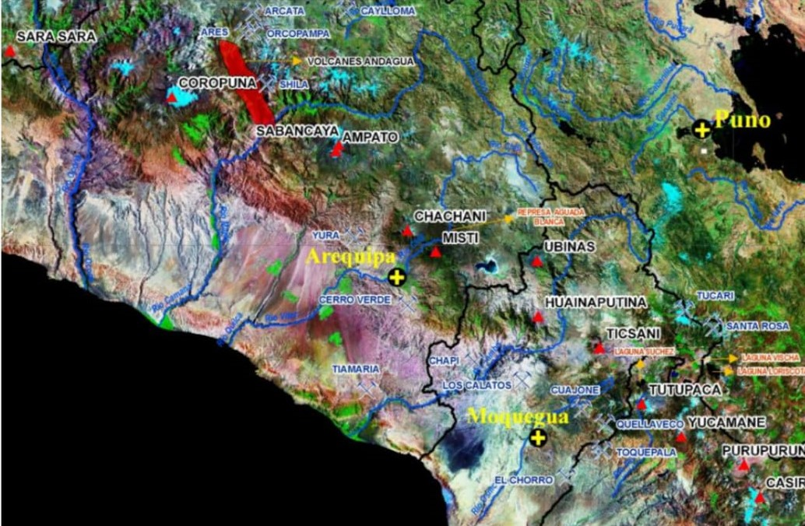

En los Andes Centrales se produce la subducción de la placa oceánica de Nazca debajo de la placa
Continental Sudamericana, la cual genera la existencia de un arco volcánico denominado Zona Volcánica
central de los andes, donde se encuentra localizados 10 volcanes activos
Estos volcanes son: Coropuna, Sabancaya y Misti, en la región Arequipa; Ubinas, Ticsani y Huaynaputina,
en la región Moquegua, así como Tutupaca, Yucamane, Purupuruni y Casiri, en la región Tacna.
Al menos 7 de estos volcanes presentaron actividad en los últimos 500 años.
Los productos emitidos por los volcanes activos durante los últimos 500 años causaron enormes estragos
a varios poblados, terreno de cultivo y obras de infraestructura (carreteras, canales de riego, etc)
localizados en sus inmediaciones. En la época histórica los efectos más trágicos sucedieron en el sur
del peruano fueron generados por la erupción explosiva del volcán Huaynaputina en el año 1600 d.C, durante
el cual murieron mas de 1500 personas y se destruyeron mas de 10 poblados menores localizados en sus inmediaciones. |
 |